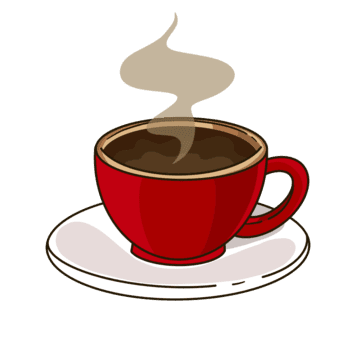

Our Story
Mountain Bean Café is a coffee company that was created to make a welcoming place where both visitors and locals of Colorado could enjoy freshly brewed coffee. We wanted to create a place that people could relax in either before or after their adventure in the mountains. We have noticed a problem where travelers have struggled to find a coffee shop that offers premium coffee, and a relaxing atmosphere.
Our goal today is to serve premium coffee made from the best ingredients and to provide excellent customer service to every guest. We want every guest to have a one-of-a-kind coffee enjoying experience everytime they step through our doors. We also make sure every cup or pastry is prepared with effort and care for each visit.
